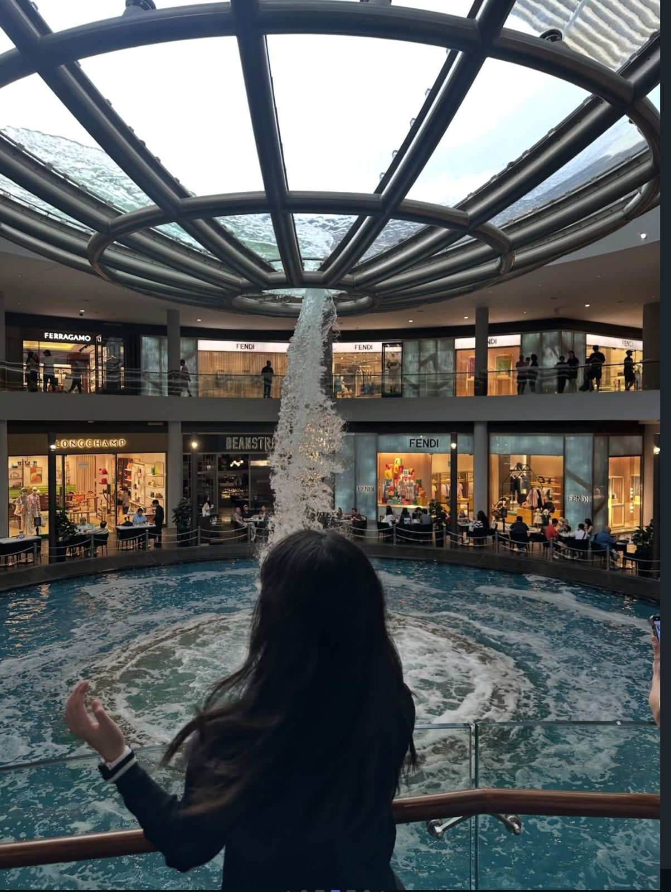

Dah lama ya kita temenan dari kelas 8 sampai kelas 9 ini, aku mau ngucapin Happy Graduation yaa semoga kamu sukses dan terima kasih juga atas bantuan bantuan yang kamu berikan, perjalanan selama smp ternyata penuh dengan suka dan duka ya, mulai dari p5 terus kegiatan osis yang kamu programkan dan juga berbagai event yang diselenggarakan.
sebelumnya aku mau minta maaf kalo selama ini aku punya banyak salah ke kamu. Aku minta maaf karena mungkin tiba-tiba ngilang, slow respon, dan juga lain sebagainya. Aku minta Maaf banget. Tapi semoga kesalahan itu tidak terulang lagi ya. Mungkin segitu aja kata kata-kata, maaf mungkin ada kata-kata yang kurang berkenan atau terlalu alay dan semoga kita bisa ketemu di lain waktu yaa
